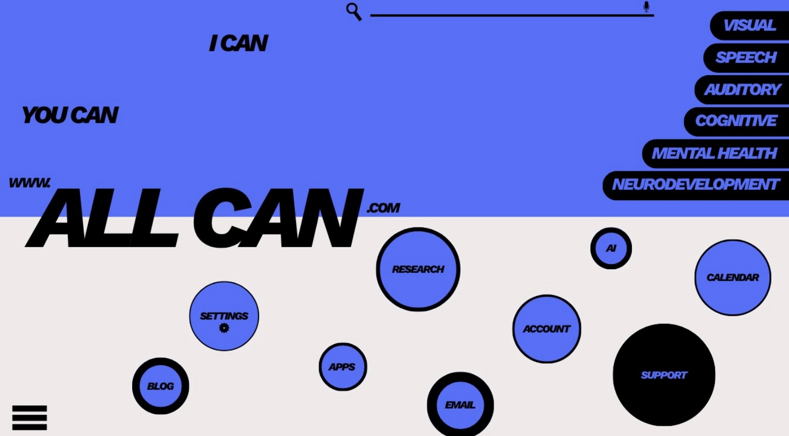
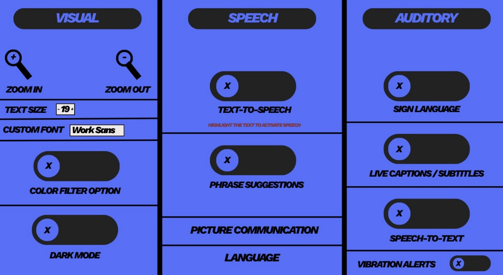

ALL CAN is a project that aims to assist users with accessibility needs in their digital tasks. The project provides a range of tools and resources to help users with visual, speech, auditory, cognitive, mental health, and neurodevelopment challenges. The goal of ALL CAN is to make digital tasks more accessible and easier for users with disabilities to complete.